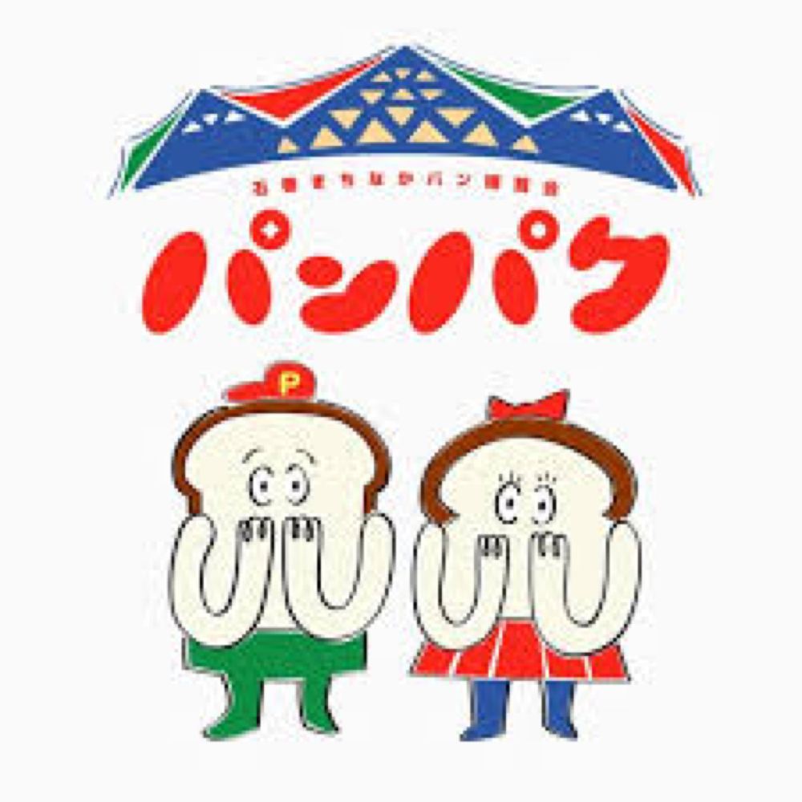
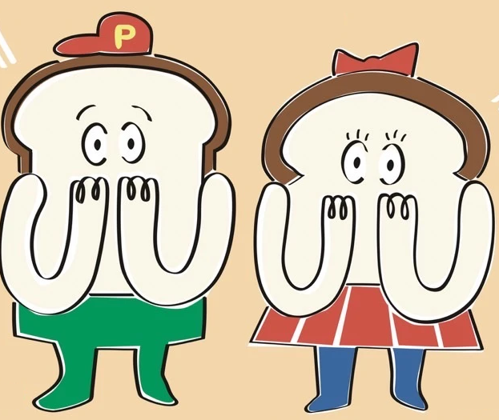

ダービーに出たい人はこちら
- 出走名をつけて走ります（本名でもOK）
- 参加費500円（当日、受付で現金払い）
- 友だちや家族と、5人までまとめて申し込めます
- 締切：10/28（水）
申し込みは1分で終わります

10/31(土) パンパクパン食い競争の1着、あなたは当てられる？

観て予想する人（無料） 予想ゲームに参加する ダービーを走りたい人（締切 10/28） 出走の申し込みはこちら ▶「石巻まちなかパン博覧会」、通称パンパク。石巻のまちなかに、宮城県内のたくさんのパン屋さんが集まる1日です。昨年は、パン屋さんやコーヒー、パンに合うフードのお店が約30店舗並びました。
そのなかの恒例企画「パン食い競争」で、今年は予想ゲームを開催します。出店者などの公式情報は Instagram（@ishinomaki_panpaku）で発信中です。
パン食い競争の大人の部を、競馬のように楽しむ予想ゲームです。出走者が走る前に、1着から3着までをスマホで予想。見ているだけだった人も、レースの参加者になれます。
観覧は誰でもOK。名前を入れるだけで参加できます。
出走名をつけて出場
出場する人は、申し込みのときに「出走名」をつけます。ディープインパクトのような、馬っぽい名前で走ります。本名やフルネームでもOKです。
大人の部は1組5名、子どもの部は1組3名で走る予定です。時間は当日の進行で前後します。
10月31日(土)
| 11:00 | パンパク開場 |
|---|---|
| 12:00ごろ | パン食い競争 子どもの部 |
| 13:30ごろ | パン食い競争 大人の部（予想ゲームはここ） |
| 15:00 | パンパク終了 |
パン食い競争の時間は予定です。当日の進行で前後します。
立町大通り商店街ほか
宮城県石巻市立町
| 対象 | パン食い競争 大人の部（ダービーは大人の部のみ） |
|---|---|
| 参加費 | 予想ゲームは無料 |
| 必要なもの | スマートフォン |
パン食い競争に出る人は、申込フォームで事前に申し込めます（締切10/28）。当日も会場の受付で受け付けます。参加費は500円です。
申し込みは1分で終わります